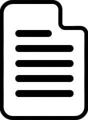

About me
After my secondary education in sciences at Collège du Christ-Roi, I did my master's degree in bioengineering in agronomic sciences with a specialization in data science at UCLouvain. I developed a particular interest in the data-driven approach. I'm convinced that data provides the best insight into problems and that using it can identify the best ways to improve many areas. I'm motivated by the prospect of working with data and improving my skills by getting involved in innovative projects. I look forward to work with a dynamic and passionate team, sharing ideas and knowledge to solve complex real-world problems.
My projects
Modeling the spread of malaria and possible responses 
This project aims to develop a model for the spread of malaria using the SEIR (Susceptible-Exposed-Infectious-Removed) model, a widely recognized approach for studying the dynamics of infectious diseases. Malaria, a parasitic disease transmitted by mosquitoes, continues to pose a significant public health challenge in many regions of the world.
The primary objective of this project is to build a sophisticated mathematical model that will provide a better understanding of malaria transmission dynamics, taking into account factors such as population density, seasonality, the use of insecticide-treated bed nets, and other key variables. The SEIR model will be employed to represent the various phases of the disease, from the incubation period to infection and recovery. Real epidemiological data will be collected and used to calibrate and validate the model, enabling more accurate forecasts of malaria spread in different geographic areas. Furthermore, this model will assist in assessing the potential impact of various public health interventions, such as bed net distribution, insecticide spraying, and the promotion of prevention behaviors. This project on modeling malaria spread with an SEIR model aims to provide critical insights to guide malaria control strategies and contribute to reducing the prevalence of this devastating disease in affected regions.
Mapping concentrations of three trace metals in the province of Liège (Belgium)
This project aims to create a detailed map of trace metal element (TME) concentrations in the Province of Liège, Belgium. TMEs, such as lead, mercury, cadmium, and other metals, can have a significant impact on the environment and human health, especially when present at elevated levels.
The primary goal of this initiative is to gather precise geospatial data on TME concentrations throughout the province using chemical analysis, geomatics, and mapping techniques. These data could then be integrated into a Geographic Information System (GIS) to create interactive and informative maps. The resulting maps could, for example, enable local authorities, researchers, public health professionals, and the community at large to better understand the spatial distribution of TMEs in the Province of Liège. This will help identify potentially at-risk areas and guide remediation and prevention efforts. Additionally, this project will aim to raise public awareness about the issues related to TME contamination by providing accessible information to the general public, including through online applications and awareness campaigns. In summary, this project to map trace metal element concentrations in the Province of Liège will contribute to more effective environmental risk management and public health protection while promoting responsible use of the region's natural resources.
Contact me
Mail : nico.degives@gmail.com
Phone : +32 489 86 68 60
You can reach me on LinkedIn : Nicolas Degives